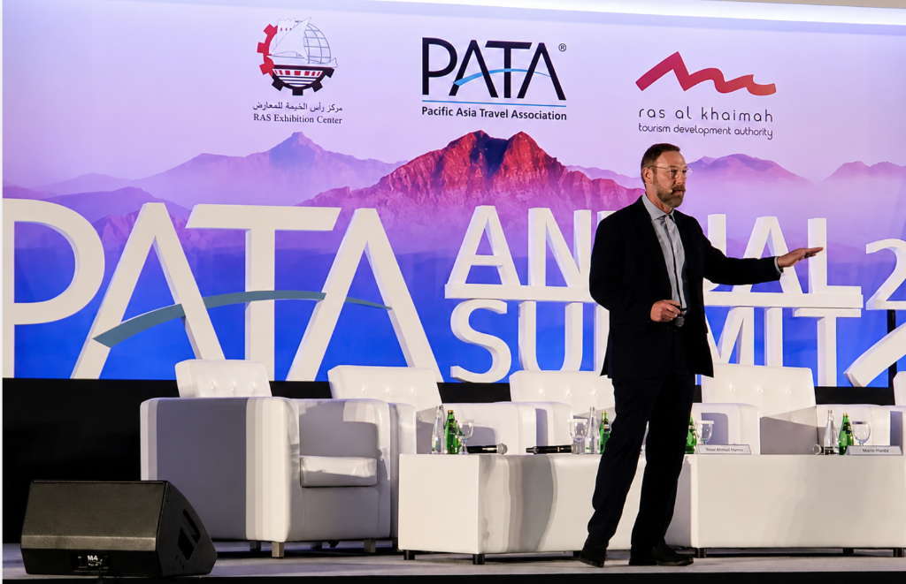
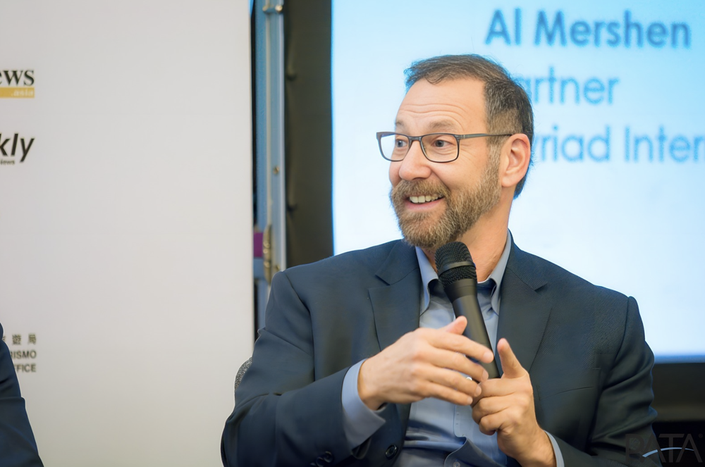
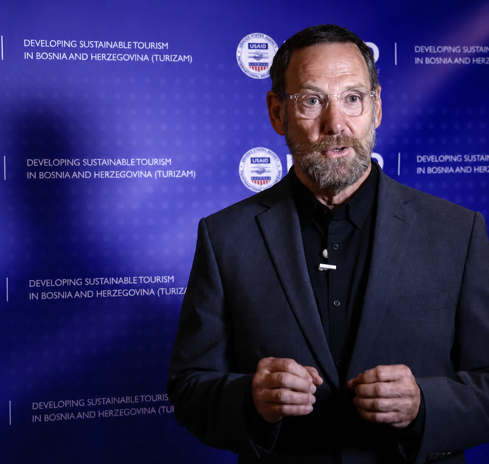

Preparing for the Future of Travel
Research, predictions and shifts shaping the choices destinations and travel businesses make next.
Alan Elliott Merschen · Travel keynote speaker
Fresh ideas, spirited delivery and decades of experience across the global travel industry.
Alan Elliott brings the energy of an educator and the perspective of a founder to travel industry stages around the world.


Presentations across five continents
His talks invite audiences to think in creative and entrepreneurial ways, with research, predictions and insights that help people see new possibilities for travel.
See Speaking Topics
Advancing new ideas
Alan Elliott founded The Sigmund Project to make space for innovation and collaboration across tourism. It reflects a belief that the best ideas grow when people share them and put them to work.
Explore The Sigmund ProjectKeynote topic ideas
Research, predictions and shifts shaping the choices destinations and travel businesses make next.
Blending travel, work and life as people seek variety and meaningful experiences.
Creative and entrepreneurial thinking for organizations ready to turn ideas into action.
Background
Alan Elliott started in academia, then founded Myriad, working in international travel marketing with private clients and governments on five continents. Today, he shares what he has learned through talks that connect industry insight with fresh ideas.
The Experience Behind the Speaker
Audience feedback
“Fantastic information, EXCELLENT DISCUSSION & Great session!”Audience feedback on Alan Elliott's speaking
For your consideration

Start a conversation
For speaking engagements, board and advisory opportunities, or an idea worth discussing.
Connect with Alan Elliott